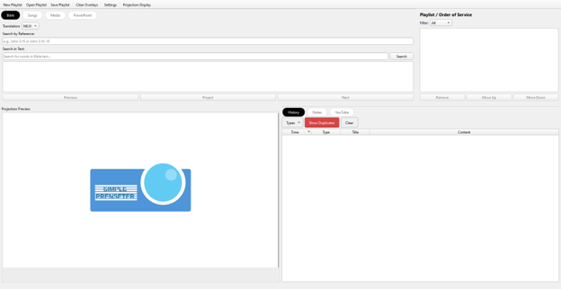

SimplePresenter
Lifting the Name of the Lord
For small groups
Present. Share. Focus.
Verses, lyrics, cues. One calm window.
Open source on GitHub.
- Verses
- Lyrics
- Media
- Notes

For small groups
Verses, lyrics, cues. One calm window.
Open source on GitHub.
